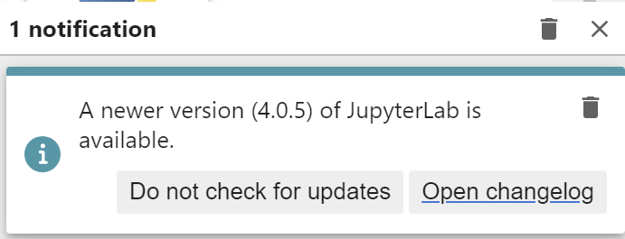

!cat /home/guillaume/bin/jupyterlab#!/bin/bash
cd ~
source ~/miniconda/etc/profile.d/conda.sh
conda activate base_jupyter_v4
jupyter labOctober 5, 2023
As mentionned in logbook May-23, jupyter lab v4 is now available.

2 config files in linux:
.jupyter
.local/share/jupyter
I have removed them (actually mv with _backup_<date> suffix
base_jupyter_v4 environmentHere is how I created it
conda remove --name base_jupyter_v4 --all
1mamba create -n base_jupyter_v4 --override-channels --strict-channel-priority -c conda-forge -c nodefaults jupyterlab ipywidgets tqdm python==3.11
mamba activate base_jupyter_v4
# clean directories: .jupyter and .local/share/jupyter
# and launch with `jupyter lab`
2mamba install --strict-channel-priority -c conda-forge -c nodefaults nb_conda_kernels --yes
3mamba install -y -c conda-forge -c plotly jupyter-dash
4mamba install -y -c conda-forge jupyterlab_execute_time
5mamba install -y -c conda-forge pyviz_comms
6pip install jupyterlab-quartopython -m ipykernel install --user --name=my_env)
As explained in WSL2 on a fresh new PC / jupyter lab
I have setup jupyterlab as a service. Jupyter lab is automatically started with WSL.
thanks to - /etc/systemd/system/jupyterlab.service nothing to be changed here
~/bin/jupyterlab and here I have to update to base_jupyter to base_jupyter_v4
~/bin/jupyterlab.sh, ~/bin/jupyterlab.sh nothing to be changed here
#!/bin/bash
cd ~
source ~/miniconda/etc/profile.d/conda.sh
conda activate base_jupyter_v4
jupyter labThen enable this service
chmod +x /home/guillaume/bin/jupyterlab.sh
sudo systemctl daemon-reload
sudo systemctl enable jupyterlab.service
sudo systemctl restart jupyterlab.serviceand to monitor logs of this service
Just pointing to http://localhost:8888/lab
In case of update detected in jupyter lab version.
Here is my procedure.